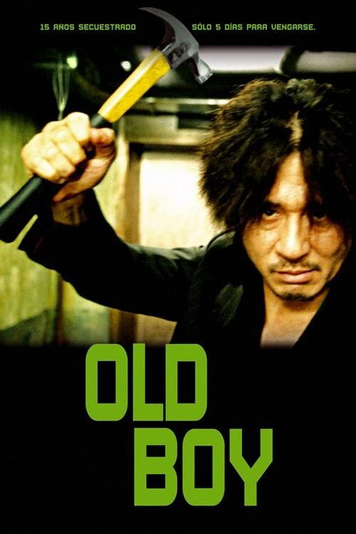

Old Boy (2003)
Sinopsis Rápida
Secuestrando durante 15 años sin explicación, un hombre es liberado y se lanza a una brutal búsqueda de venganza, desencadenando una espiral de revelaciones impactantes que cuestionan la realidad misma.
Sinopsis Detallada
Oh Dae-su despierta en una celda sin saber cómo llegó allí. Después de 15 años de cautiverio brutal, lo liberan sin explicación. Armado con una misteriosa tarjeta de teléfono y una sed insaciable de venganza, Dae-su inicia una implacable búsqueda de sus captores. La investigación lo lleva por un camino tortuoso lleno de giros inesperados, revelando una conspiración compleja y una verdad devastadora que pondrá a prueba sus límites físicos y morales. La película es una obra maestra de suspense, violencia estilizada y giros argumentales que te dejarán sin aliento.
¿Por qué tenés que verla?
- Una historia de venganza implacable y brutalmente satisfactoria.
- La dirección estilizada y visualmente impactante de Park Chan-wook.
- Un clásico del cine contemporáneo que ha influenciado a innumerables películas y series.
- Giros argumentales inesperados que te mantendrán al borde del asiento.
Idea Extra
Análisis del simbolismo en Old Boy: Explorando el uso del color, la comida y otros elementos visuales para construir la atmósfera y el significado.
{{CONTENIDO_RELACIONADO}}